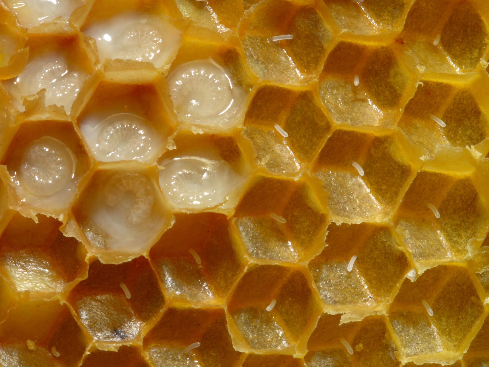
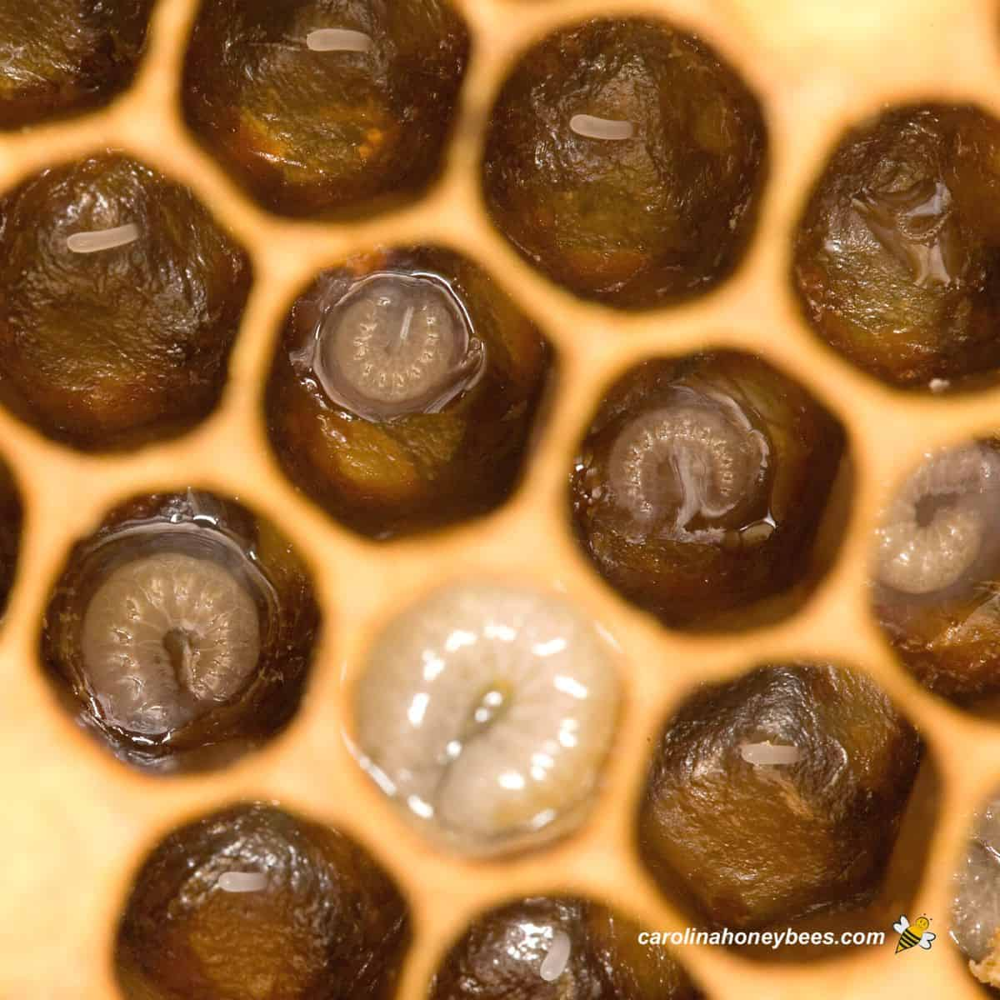
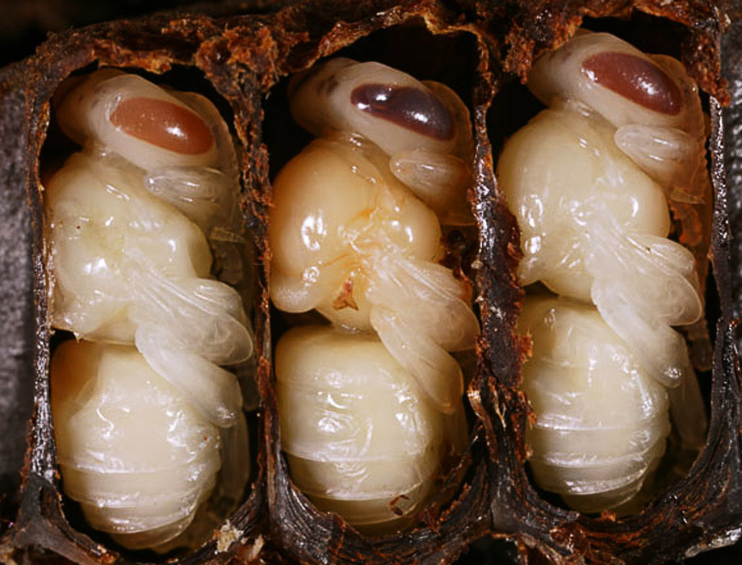
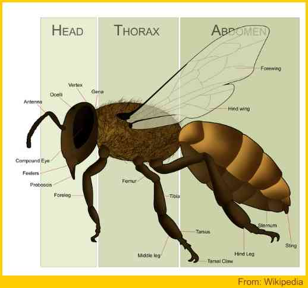

Everything you need to know about the most important insect on Earth — how they live, what they do, and why we need them.
🐝 The Colony
A honey bee colony has three kinds of bees. Each one looks different, lives for a different length of time, and does a completely different job. Here is a quick side-by-side look.
| Feature | 👑 Queen | 🐝 Drone | ⚒️ Worker |
|---|---|---|---|
| Size | Largest bee in the hive | Medium-sized | Smallest bee |
| Stinger | Yes — can sting many times | No stinger at all | Yes — but only once |
| Lifespan | 2 to 5 years | About 2 months; dies after mating or is driven out in winter | 6 weeks to 6 months |
| Main Job | Lay eggs and lead the colony | Mate with the queen | Build, collect food, protect, nurse larvae |
| How Many? | Usually just 1 per hive | Up to 500 | 20,000 – 80,000 depending on the species |
| Sex | Female | Male | Female |
🔑 New Words
Before reading further, learn these important words. They will appear again and again throughout this guide.
🔄 Development
Honey bees grow through four completely different stages. Each stage looks and behaves nothing like the previous one. This kind of total change is called complete metamorphosis. The four stages are: Egg → Larva → Pupa → Adult. All of these stages happen inside the honeycomb cells in the hive.
Stage 1 — Egg

The egg is the first stage in the life cycle of a honey bee. Honey bee eggs are white, elongated, and about 1.5 mm long.
Stage 2 — Larva

The larva is the second stage of the honey bee life cycle. It is a white, worm-like, legless stage that grows rapidly.
Stage 3 — Pupa

The pupa is the third stage of the honey bee life cycle. During this stage, the larva changes into an adult bee.
Stage 4 — Adult

The adult stage is the final stage in the life cycle of a honey bee. Adult bees emerge from the brood cell and begin their duties.
Queen: 16 days total (egg 3 + larva 5 + pupa 8)
Worker: 21 days total (egg 3 + larva 6 + pupa 12)
Drone: 24 days total (egg 3 + larva 7 + pupa 14)
The only thing that makes a bee become a queen is being fed royal jelly throughout her entire larva stage. It is richer in proteins and sugars than the food given to worker larvae, and it triggers different genes to switch on.
🍯 Production
Forager worker bees fly out and visit hundreds of flowers. They use their long tongues to suck nectar out of flowers and store it in a special second stomach called the honey stomach (or honey crop). A forager can visit up to 1,500 flowers in a single trip and carries roughly half her own body weight in nectar when she returns.
Back at the hive, the forager passes the nectar to a house bee by mouth. The bees chew and pass the nectar between them many times. During this process, enzymes from the bees' mouths break the nectar's complex sugars into simpler ones (glucose and fructose). These simpler sugars are what make honey sweet, long-lasting, and safe to eat.
The nectar is placed into open honeycomb cells. Worker bees fan their wings rapidly over the cells to create airflow. This evaporates the water content — nectar starts at about 80% water and honey ends at only 17–20% water. This low water content is exactly what stops bacteria from growing and allows honey to last for thousands of years.
Once the honey is thick and ripe, bees cover each cell with a thin layer of beeswax to seal it. This is how you know the honey is ready. Sealed honey can be stored indefinitely — archaeologists have found 3,000-year-old honey in Egyptian tombs that was still perfectly edible.
~38% fructose (fruit sugar)
~31% glucose (fast energy sugar)
~17% water — low enough to stop bacteria
~14% other sugars, acids, enzymes
Vitamins B2, B3, B5, B6, C and minerals like calcium, iron, zinc
Natural antibacterial compounds — honey kills germs
Worker bees produce beeswax from glands on the underside of their abdomen. They use it to build the honeycomb. It takes about 8 kg of honey for bees to produce just 1 kg of beeswax. Beeswax is used in candles, lip balms, lotions, polish, and waterproofing products.
🍯 Uses
💰 Economy
Honey bees are not just important for making honey — they are one of the most economically valuable animals on Earth. Their work as pollinators keeps entire farming industries alive. Globally, bees contribute an estimated $300 billion (USD) per year to world food production through pollination alone. Without bees, most fruits, vegetables, nuts, and seeds that humans eat every day would disappear or become extremely expensive.
The total value of crops that depend on bee pollination worldwide. This includes almonds, apples, strawberries, avocados, blueberries, coffee, and hundreds more crops that billions of people eat every day.
Roughly one-third of all food eaten by humans comes from plants that are pollinated by bees. If bees disappeared, supermarkets would lose a huge portion of their produce sections almost immediately.
The worldwide honey market is worth over $9 billion per year and is growing. China, Turkey, Argentina, Ukraine, and the USA are among the biggest producers. Beekeeping is a major income source for millions of farming families worldwide.
More than 100 major crops — including almonds (90% dependent on bees), cocoa (chocolate), apples, mangoes, coconuts, sunflowers, and cotton — can only be properly pollinated by bees. Many of these crops are worth hundreds of millions of dollars per country.
Beekeeping (apiculture) is a profession and a source of income for millions of families, especially in developing countries. A single beekeeper can manage dozens of hives and earn a stable income from honey, beeswax, royal jelly, propolis, and bee pollen.
Farmers often rent hives of bees during flowering season to improve crop yields. For example, almond farmers in California pay beekeepers to bring billions of bees to their orchards every year. Without rented bees, almond production would collapse entirely.
Bees do not just support human farming — they support entire ecosystems. Wild flowers, trees, and plants that animals eat all depend on bee pollination. When bees thrive, forests and grasslands thrive. When bee populations fall (due to pesticides, disease, or habitat loss), entire food chains are affected — from insects to birds to large mammals. Protecting bees is not just about honey; it is about keeping the natural world alive.
In recent decades, bee populations in many parts of the world have been declining due to pesticide use, habitat destruction, disease, and climate change. Scientists call this Colony Collapse Disorder. When large numbers of bees die, crop yields fall, food prices rise, and many wild plant species can no longer reproduce. Countries around the world are now passing laws to protect bees because losing them would be an economic and ecological disaster.